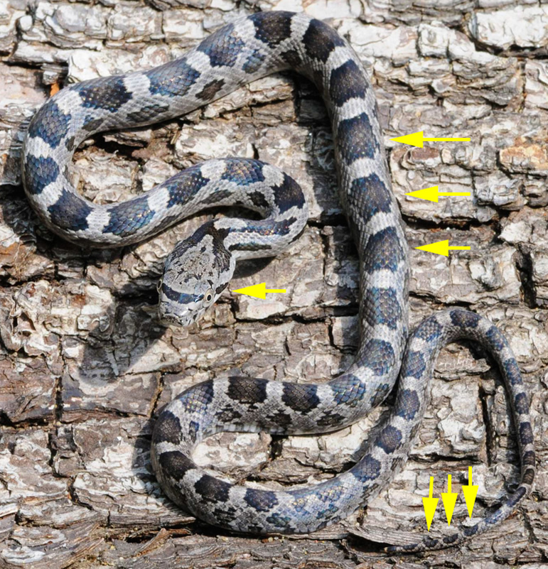
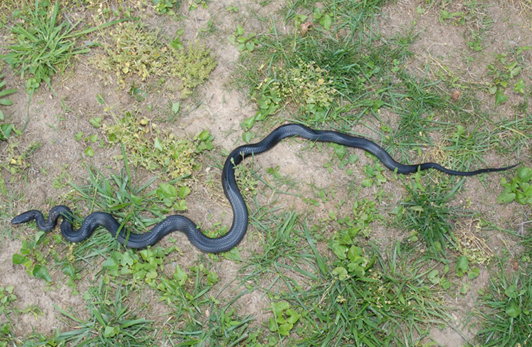
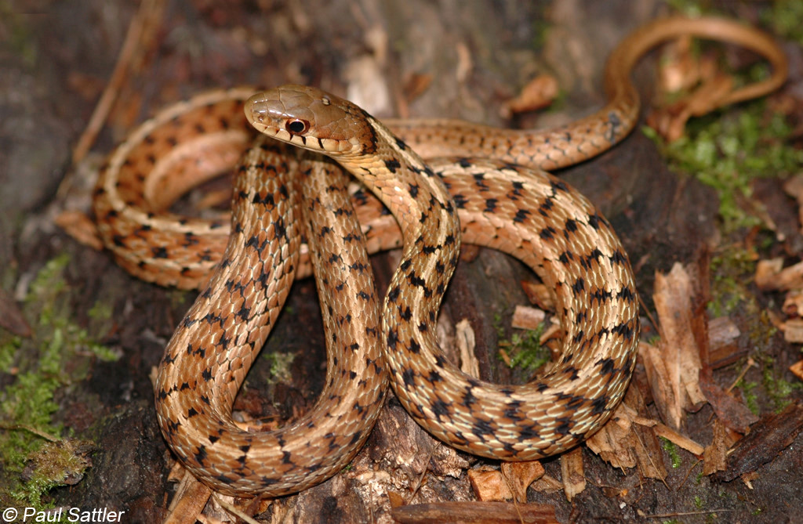
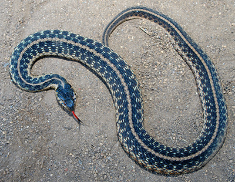
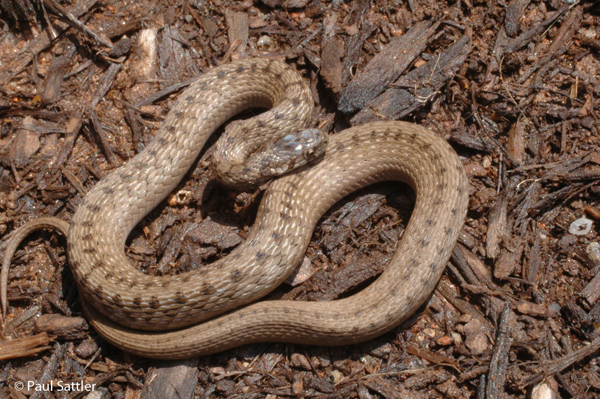
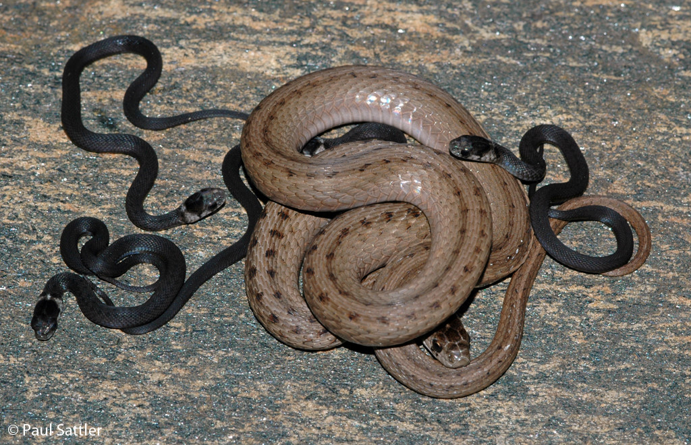
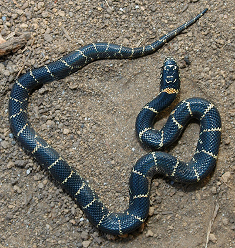
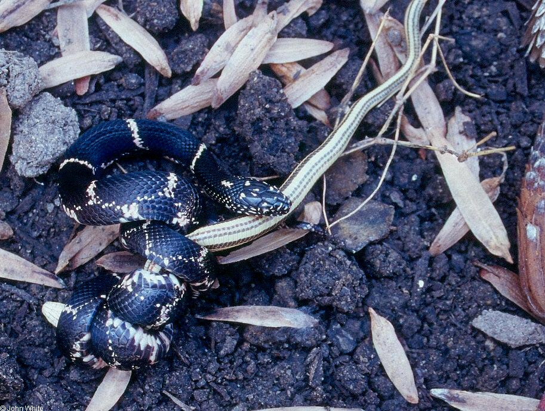
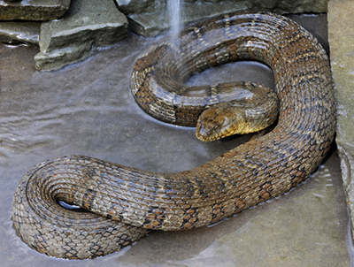

🐍 Eastern Rat Snake aka Black Rat Snake Non-Venomous


Appearance
Long (up to 6 feet), shiny black with a white chin and belly. Juveniles are gray with darker brown blotches. Adults are solid shiny black.
Where You'll See Them
Climbing trees, in attics, barns, or near wood piles
Commonly Mistaken For
Juvenile copperheads — but copperheads have hourglass bands, a coppery-orange head, and often bright yellow tail tips. Rat snakes don't.
🐍 Eastern Garter Snake Non-Venomous


Appearance
Thin, 1.5 to 3 feet long, olive, brown, or black with yellowish stripes down the back. Juveniles are thinner and more vibrant. Adult stripes can fade with age.
Where You'll See Them
Lawns, gardens, parks — often near water
Lookalike
Ribbon snakes — they are more slender, have white markings around their eyes, and a longer tail
🐍 Dekay's Brown Snake Non-Venomous


Appearance
Small (8–15 inches), brown or gray with two rows of small dark spots. Juveniles often have a whitish ring around the neck. Adults are dull brown or gray.
Where You'll See Them
Under rocks, mulch, garden debris
Food
Mainly eats slugs, snails, earthworms, and soft-bodied insects. Especially helpful in gardens for natural pest control!
🐍 Eastern Kingsnake Non-Venomous


Appearance
Glossy black with thin white or yellow chain-like bands. Juveniles are smaller and glossier. Adults are about 3–5 feet long, robust and confident in movement.
Where You'll See Them
Wooded areas, fields, backyards
Lookalike
Black racer or rat snake — racers are thinner, faster, and may flee quickly. Kingsnakes have distinct banding, while racers and rat snakes don't as adults.
🐍 Northern Water Snake Non-Venomous


Appearance
Thick-bodied, brown or reddish with darker bands. Juveniles are tan or light gray with very clear red or brown bands. Adults can appear dark brown or almost black, especially when wet.
Where You'll See Them
Near creeks, ponds, or rivers
Lookalike
Often mistaken for venomous cottonmouths — but cottonmouths have thick, blocky heads. Water snakes have dark lines on the edge of each labial (lip) scale.
Want to see more?
Virginia has many more snake species! Visit the full list at: